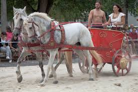

Chariots & Early Carts
Era: 2000 BCE – onward
Chariots and early carts improved speed and efficiency in travel, warfare, and trade. Civilizations like the Egyptians, Persians, and Chinese used them extensively, shaping military strategy and transportation.
Type: Early Wheeled Transport